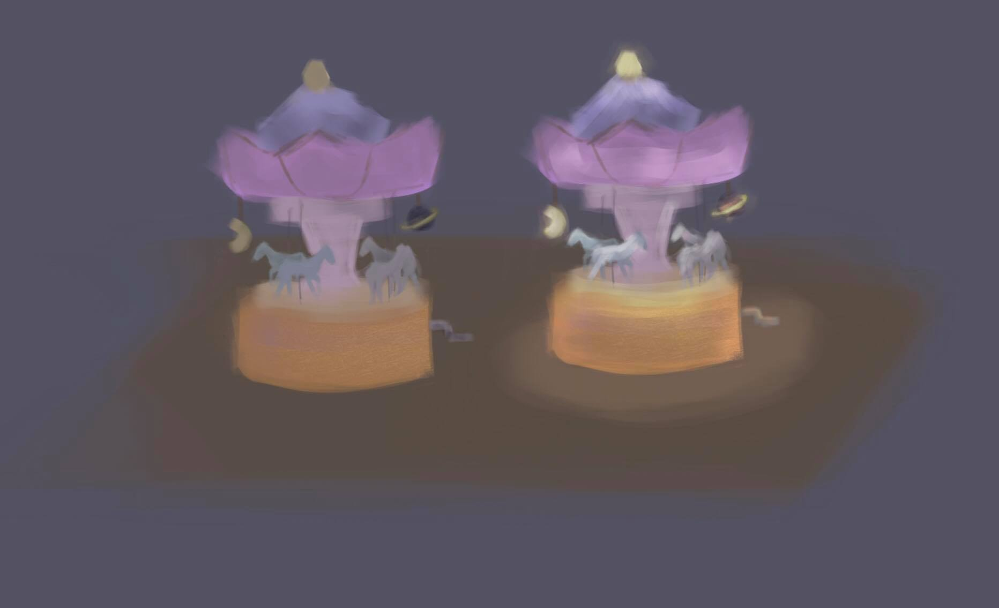

HW 4 Problem 2: Creative Scene Three.js Application
Components:
- animated carousel scene
- handle to spin and spins slowly backward when interaction ends
- lights inside and on top carousel tent
- general lights
- floor, floor, and dome with sky background
- possibly adding music
Graphics Concepts:
- modeling: carousel object and components (e.g. horse, tent, poles)
- material, lighting, shading: phong material for everything, spotlight on each horse,
ambient light, directional light, point light for light bulbs
- textures and texture mapping: floor, wooden floor, sky background
- curved lines/surfaces: horse mane/saddle, sky background dome, carousel crown
- transparency: light bulbs
- user interaction: spinning handle
- animation: spinning carousel, horse moving up and down the pole
To-Dos:
- add a crown to the tent top
- change colors for horse (make an array)
- add tent decorations (e.g. colors, light bulbs)
- add texture for wooden floor and sky background
- add user interaction and animation
Sketch:

First Draft of Static Scene: